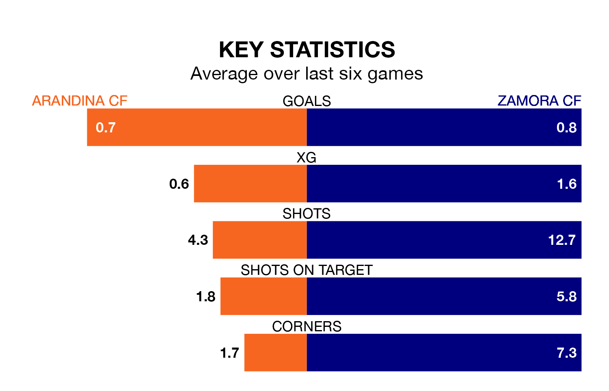

Mid-season relegation candidates Arandina CF face a challenge against high-flying Zamora CF at the Estadio El Montecillo on Wednesday.
Arandina CF are rooted to the bottom of the Segunda División RFEF Group 1 table, and have picked up two wins and four draws in their 16 games to date.
Zamora, meanwhile, are third in the standings with 31 points, having won nine and drawn four, and are four points behind table-toppers Ourense CF.
Arandina are in terrible form in Segunda División RFEF Group 1, with no wins and two draws from their last six games.
With two wins and two draws over that period, Zamora's form is much better – they have taken eight points from 18, compared to the hosts' two.
With 14 goals in 16 games so far this season, Arandina are the league's second-lowest scorers with 0.9 goals per game. And they are conceding more than average, letting in 26 goals at a rate of 1.6 per game.
The away team are also below average scorers, with 1.1 goals per game, compared to a league average of 1.2. They have conceded 0.6 goals per game.
Arandina's last match was on December 17, a 3-1 loss against Club Marino de Luanco.
Zamora drew 1-1 with Langreo last time out, on December 16.
Updated: 15:34, 08/01/24